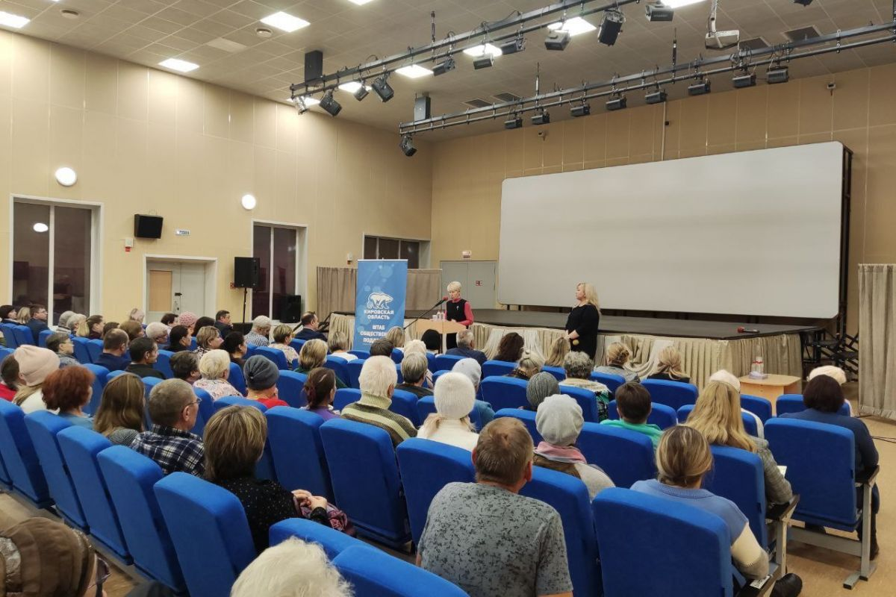

25 апреля 2023
Недавно наш фонд "ДоброДел" организовал образовательный семинар для местного сообщества, целью которого было повышение осведомленности о важности сохранения дикой природы и ответственного отношения к домашним животным.
Мероприятие, прошедшее в местной библиотеке, собрало вместе владельцев домашних животных, школьников и других заинтересованных лиц. На семинаре были представлены различные доклады от экспертов в области экологии, ветеринарии и ухода за животными.
Особое внимание уделялось темам, связанным с правильным уходом за домашними питомцами, важности стерилизации и вакцинации, а также методам предотвращения конфликтов между дикой и домашней фауной в городской среде.
Семинар также включал интерактивные сессии и мастер-классы для детей, направленные на формирование у них ответственного и уважительного отношения к природе с раннего возраста.
Мы уверены, что такие мероприятия играют ключевую роль в образовании общественности и являются важным шагом к созданию более гармоничного сосуществования человека и природы. Мы планируем продолжать серию подобных семинаров и рады видеть растущий интерес к этим важным вопросам.